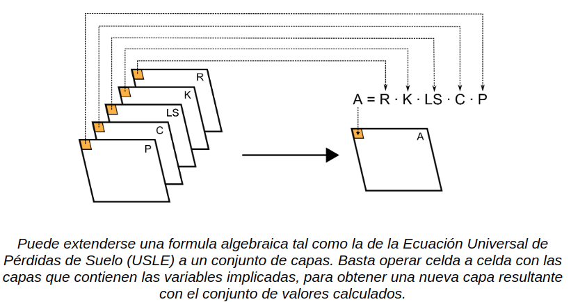
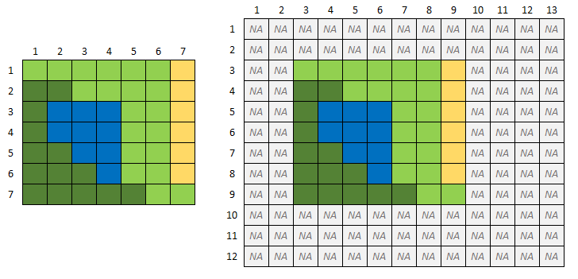

El análisis espacial constituye el conjunto de procedimientos y métodos que permiten analizar capas ráster, extraer información y también generar nuevos valores a partir de una o varias capas ráster.

Ilustración: Olaya, 2014.
Al igual que con las capas vectoriales, en el caso de los ráster también es posible aplicar operaciones de consulta, transformación y alteración, lo importante es que se cumplan los siguientes requisitos cuando se opera con más de una capa:
- Las capas deben tener igual resolución espacial. Es decir que toda nuestra información raster debe tener el mismo tamaño de pixel.
- Las capas deben tener una misma área de estudio, es decir tener igual número de píxeles en filas y columnas. Es un error muy frecuente el creer que nuestros raster tienen la misma cantidad de filas y columnas, porque los valores con datos son los únicos que se visualizan, pero muchas veces, las matrices son más grande y en su malloria la componen celdas sin datos.
Como el siguiente ejemplo, que ambos raster comparten la misma información y están posicionados en la misma parte del espacio, pero uno tienen más celdas que él otro.
 Ilustración: LabGRS - Las capas deben estar en el mismo sistema de referencia espacial y de coordenadas.